The Quality module allows the users of webERP to define what they would like to test, apply those tests to certain templates or specific products (Items, Stocks) and then to capture actual test results on a Lot to Lot or Serial number basis. Outputs from the module include a Product Specification or Data Sheet and a Certificate of Analysis. Historical Results are kept and can be compared side by side for any particular Item. There is an option in the configuration that allows QA Samples to be automatically logged for Purchase Order and Work Order receipts if the product specification exists and the item is Lot or Serial Controlled. Also in the configuration are some disclaimers for specifcations and certifications.
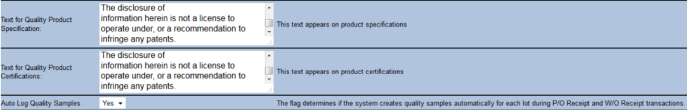All menu options for Quality are found under Manufacturing. Your menus may look differnet based on your permissoins. The menus are shown below.
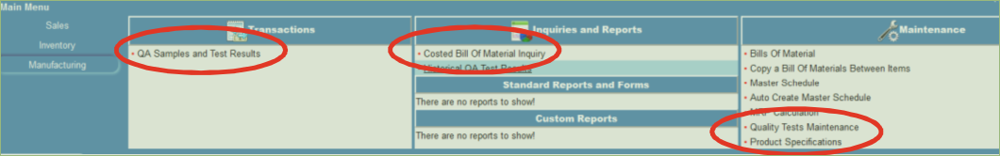This is where all tests that will be performed are defined. Other specification related information can be captured here that isn’t tested but describes in more detail the product specification. An example of this would be Processing Conditions for your product that you wish for your customers to understand. A specification is made up of any number of tests. The test defines outer tolerances but the specification allows the upper and lower bounds of the test to be specified.
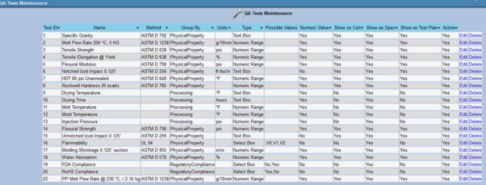 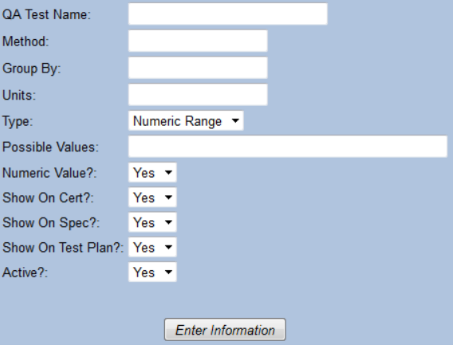Product Specifications are a collection of QA Tests that come together to define how a Product Data Sheet is built, what we test for and what we certify our results to. These are loosely tied to Items (Stocks). If a Product Specification is named the same as a stock ID then the Product Description will be used in printed paperwork and screens. If it is not a stock id then it is considered a generic product specification that can be used to hold any type of test results in your system. This also allows cascading templates to be created for faster product specification definition. In the future I foresee there may also be a loose connection to Fixed Assets. A Product Specification is added as soon as a test is added to it. To start a new specification, go to the Product Specification Screen, Type in a specification Name or stock id and click Submit.
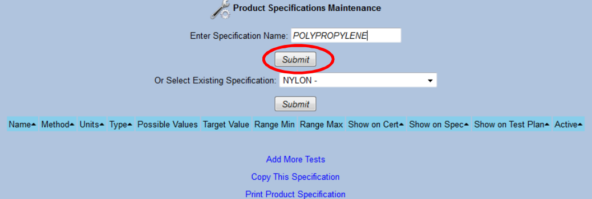Then click on "Add More Tasks"
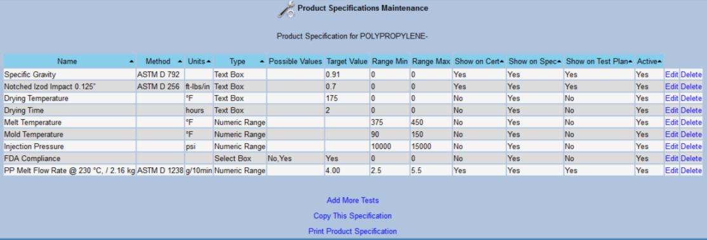Adding additoinal tests to the Specifcation. Click "Add Tests". All tests not yet on this specification shown. You may enter the values for the specification on this screen before clicking the Add button
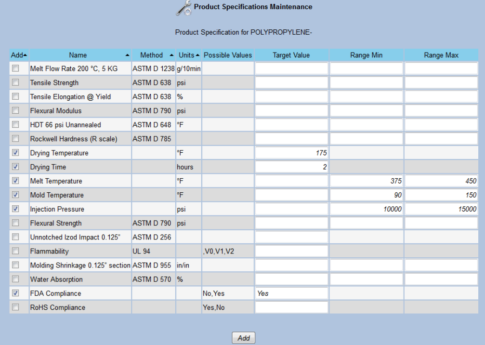Specifications can be quickly copied from one specification to another. From the Product Specification Maintenance screen select the From Specification. Choose "Copy this Specification". Then enter the Destination Specification.
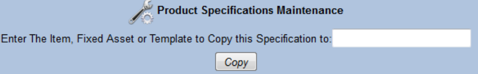Prints a Customer Facing document that shows all the QA Tests that you have specified to "Show on Product Specification"
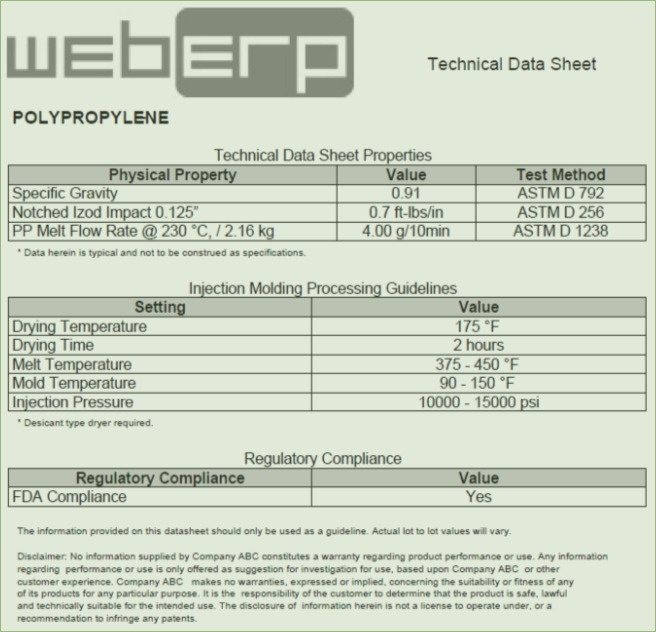Samples can be logged automatically by the system or manually by a Quality person. If the configuration is set to Yes and the item is lot or serial controlled then at P/O receipt a sample is created in the system for each new Lot or serial received for the item being received. The system will not create duplicate samples if you receive the same lot 3 times against a purchase order or work order.
You can view and edit existing samples in the "QA Samples and Test Results" under the Manufacturing module.
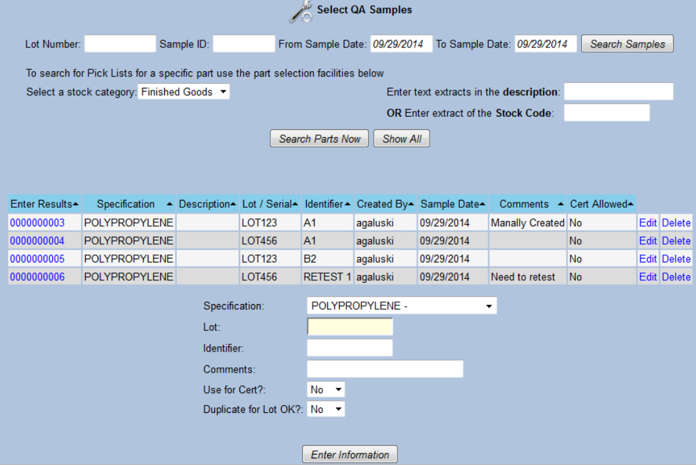When manually adding a sample you select a specification, enter a lot # (No validation exists) and an identifier and some comments. An identifier can be used to distinguish multiple samples for the same lot from each other. In many manufacturing environments samples are taken through the process for example at machine startup, quarter, half, three quarter processing and at batch end. The identifier allows us to distinguish these from each other. It can also be used to specify a retest later of a sample retain. Duplicate for Lot OK – if you choose no and a sample already exists for this lot it will not create a new one. Use for Cert marks the specific sample to be used for certification if multiple samples exist for a particular lot. Only one sample can be marked as “Use for Cert” per Item/lot combination. The system also disallows a sample being used for certification if it is missing test results. A warning is given is test results are out of specification. Some companies may wish to change this warning to a hard stop. This will require a code change or a new configuration parameter to be entered into the system.
Selecting a sample from the Select Sample screen allows test results to be entered as well as a test date and the name of the person that performed the testing. When reviewing the Test Plan Results screen the tests are color coded. Yellow: No Result Entered. Orange: Out of Specification. White: In Spec.
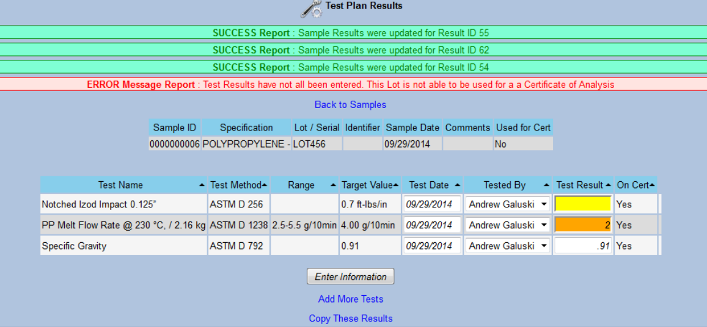Additional tests (just for this sample) can be added without affecting the existing template.
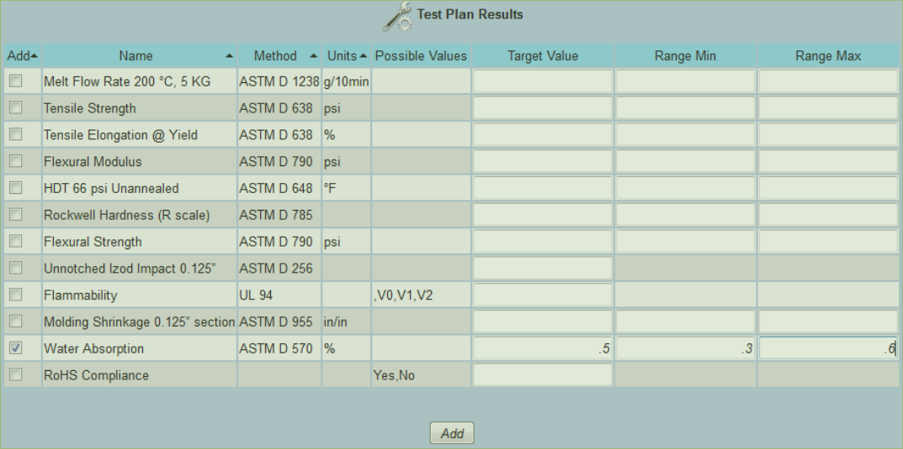Manually added tests that are not part of the normal testing plan are noted for this sample. Because they were manually added they may also be deleted from the sample.
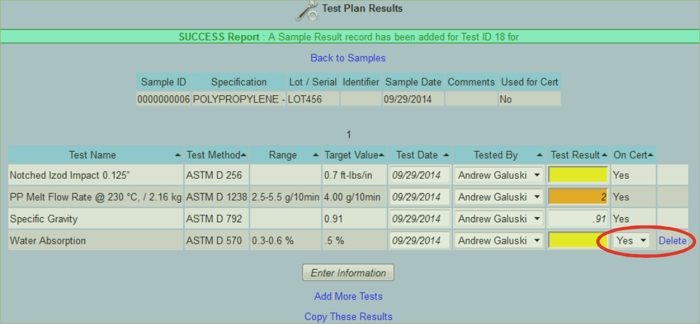Results can be copied from one sample to another. The system does not limit the result to be from matching items. This is helpful if you purchase Item A, test the product then repackage it into Product B using a W/O. You can copy the test results from Product A to Product B
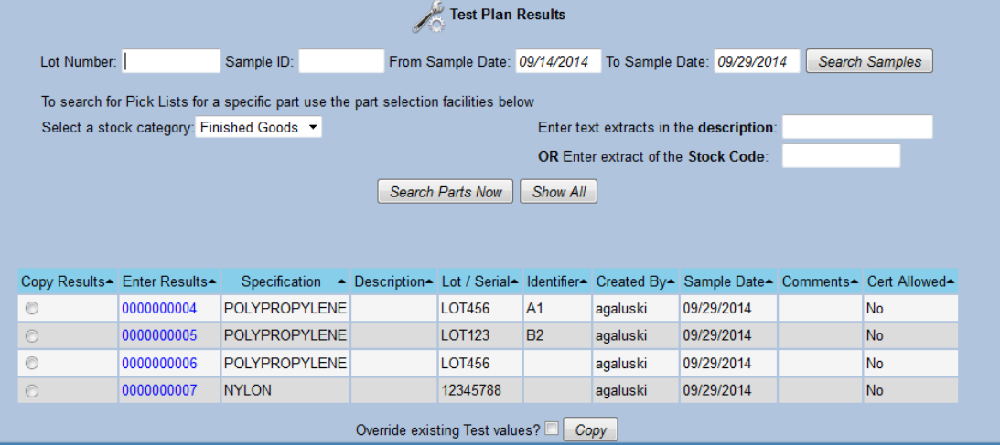1) From the Select QA Sample Screen Click on the "Yes" link in the column "Cert Allowed"
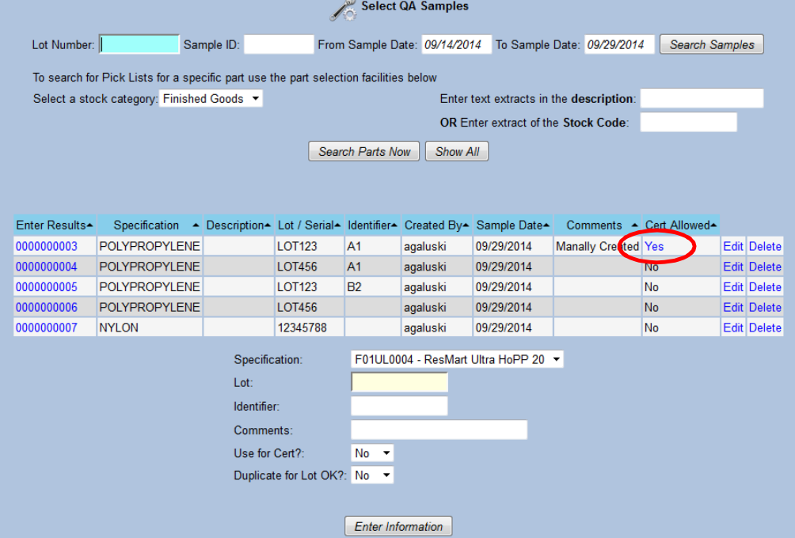2) Click Select the sample and then Print COA
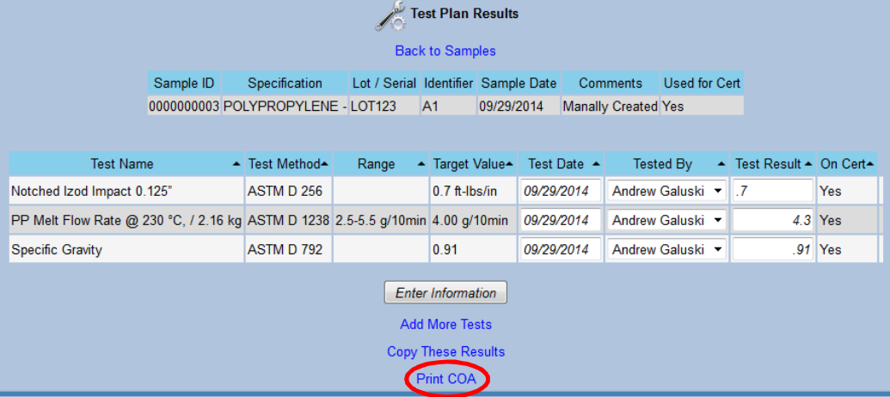The certification looks like this:
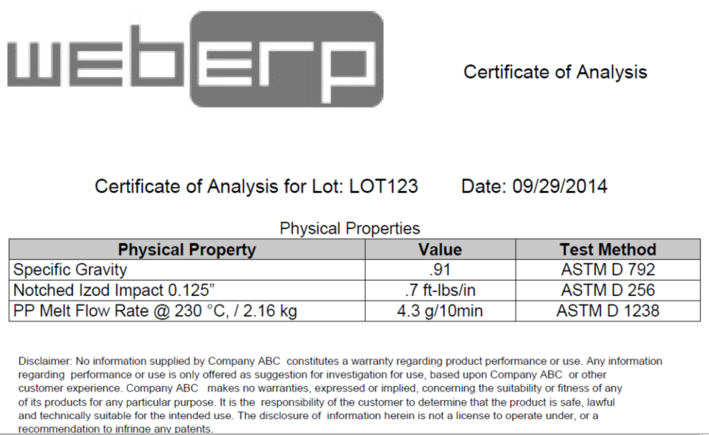